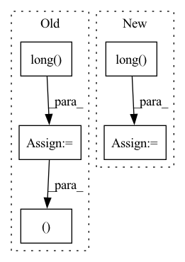

Pattern ID :23248
Before Change
self.model_rank * self.model_batch_size
)
*all_X, target = [batch[0][v] for v in self.output_map]
target = target.squeeze(-1).long()
return indexes, all_X, target
class Wrapper(BaseWrapper):
def __next__(self):After Change
indexes = indexes.flatten().long().detach().clone()
else:
*all_X, targets = [batch[v] for v in self.output_map]
targets = targets.squeeze(-1).long() .detach().clone()
// creates dummy indexes
indexes = (
(In pattern: SUPERPATTERN
Frequency: 4
Non-data size: 5
Instances Fragment ID: 73405728
Project Name: vturrisi/contrastive-learning
Commit Name: e90d420fa19620f36fead1b1a5b4c3478d59dd8a
Time: 2021-08-13
Author: enrico.fini@gmail.com
File Name: solo/methods/dali.py
M Class Name: PretrainWrapper
N Class Name: PretrainWrapper
M Method Name: __next__(1)
N Method Name: __next__(1)
M Parent Class: BaseWrapper
N Parent Class: BaseWrapper
M File Name: solo/methods/dali.py
N File Name: solo/methods/dali.py
M Start Line: 60
M End Line: 66
N Start Line: 73
N End Line: 97
Before Change
offset_y = type(self).offset_y(Y.size())
harmonic_smoothing = type(self).harmonic_smoothing(X.size(0)).view([-1,1,1])
variances = (1/harmonic_smoothing) * X.size(1)
filter_sizes = (variances*2+1).long()
dX = torch.empty_like(X)
dY = torch.empty_like(Y)
for n in range(X.size(0)):
sigma, filter_size = variances[n].item(), filter_sizes[n].item()After Change
harmonic_smoothing = type(self).harmonic_smoothing(X.size(0)).view([-1,1,1])
x_variances = (1/harmonic_smoothing) * X.size(2) / 2
y_variances = (1/harmonic_smoothing) * X.size(1) / 2
x_filter_sizes = (x_variances.ceil().long() * 2 + 1)
y_filter_sizes = (y_variances.ceil().long() * 2 + 1)
dX = torch.empty_like(X)
dY = torch.empty_like(Y)
for n in range(X.size(0)):
//sigma, filter_size = variances[n].item(), filter_sizes[n].item()
sigma = x_variances[n].item(), y_variances[n].item()
filter_size = x_filter_sizes[n].item(), y_filter_sizes[n].item()
sample_offset_x=offset_x[n: n+1, :, :].unsqueeze(dim=1)
sample_offset_y=offset_y[n: n+1, :, :].unsqueeze(dim=1)
sample_offset_x=K.filters.gaussian_blur2d(sample_offset_x, kernel_size=filter_size, sigma=sigma)
sample_offset_y=K.filters.gaussian_blur2d(sample_offset_y, kernel_size=filter_size, sigma=sigma) Fragment ID: 73405732
Project Name: anguelos/tormentor
Commit Name: 8ab4428988cdc409e9e8688889ffbc004286616f
Time: 2020-07-14
Author: anguelos.nicolaou@gmail.com
File Name: tormentor/spatial_augmentations.py
M Class Name: ElasticTransform
N Class Name: ElasticTransform
M Method Name: generate_batch_state(2)
N Method Name: generate_batch_state(2)
M Parent Class: SpatialImageAugmentation
N Parent Class: SpatialImageAugmentation
M File Name: tormentor/spatial_augmentations.py
N File Name: tormentor/spatial_augmentations.py
M Start Line: 183
M End Line: 194
N Start Line: 250
N End Line: 271
Before Change
preds_ = torch.transpose(preds, 1, 2)
//print(preds.size())
y = y.long()
loss = self.Loss(preds_, torch.squeeze(y))
return preds, loss
return preds
After Change
preds = self.Linear(hs.contiguous().view(x.size(0), -1))
preds_.append(preds)
if y is not None:
loss+= self.Loss(preds, y[:,i].squeeze().long() )
preds_ = torch.stack(preds_, dim = 1)
if y is not None:
loss/=len(xs) Fragment ID: 73405738
Project Name: dido1998/recurrent-independent-mechanisms
Commit Name: d87a800096eaa36730cbabac535eea24973f3799
Time: 2020-02-11
Author: adidolkar123@gmail.com
File Name: networks.py
M Class Name: CopyingModel
N Class Name: CopyingModel
M Method Name: forward(5)
N Method Name: forward(5)
M Parent Class: nn.Module
N Parent Class: nn.Module
M File Name: networks.py
N File Name: networks.py
M Start Line: 255
M End Line: 276
N Start Line: 291
N End Line: 313
Before Change
box_y = bboxes[...,1].long()
box_w = bboxes[...,2]
box_h = bboxes[...,3]
indices = indices.long()
// From TTFNet
var_w = torch.square(alpha * box_w / 6)
var_h = torch.square(alpha * box_h / 6)After Change
box_y = bboxes[...,1].long()
box_w = bboxes[...,2]
box_h = bboxes[...,3]
labels = labels.long()
// From TTFNet
var_width = torch.square(alpha * box_w / 6)
var_height = torch.square(alpha * box_h / 6)
// a matrix of (x,y)
grid_y, grid_x = torch.meshgrid([
torch.arange(img_height, dtype=torch.float32, device=device),
torch.arange(img_width, dtype=torch.float32, device=device)
])
for b in range(batch_size):
for i, m in enumerate(mask[b]):
if m == 0:
continue
idx = labels[b][i]
x = box_x[b][i]
y = box_y[b][i]
var_w = var_width[b][i]
var_h = var_height[b][i]
// gaussian kernel
radius_sq = (x - grid_x)**2 / (2*var_w + eps) + (y - grid_y)**2 / (2*var_h + eps)
gaussian_kernel = torch.exp(-radius_sq)
heatmap[b, idx] = torch.maximum(heatmap[b, idx ], gaussian_kernel)
return heatmap
Fragment ID: 73405742
Project Name: gau-nernst/centernet-lightning
Commit Name: bde713dbf016e3c26a00307e27cc9eca629776de
Time: 2021-06-19
Author: gau.nernst@yahoo.com.sg
File Name: losses.py
M Class Name: AnonimousClass
N Class Name: AnonimousClass
M Method Name: render_target_heatmap_ttfnet(7)
N Method Name: render_target_heatmap_ttfnet(7)
M Parent Class:
N Parent Class:
M File Name: losses.py
N File Name: losses.py
M Start Line: 53
M End Line: 81
N Start Line: 51
N End Line: 84